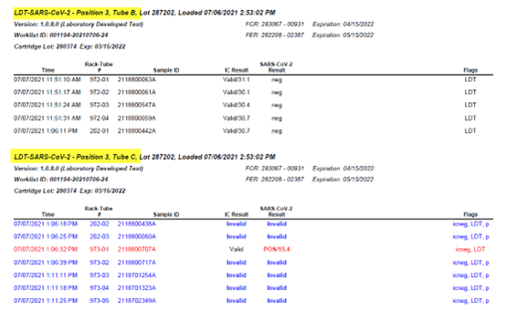
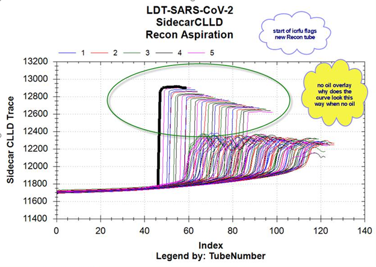
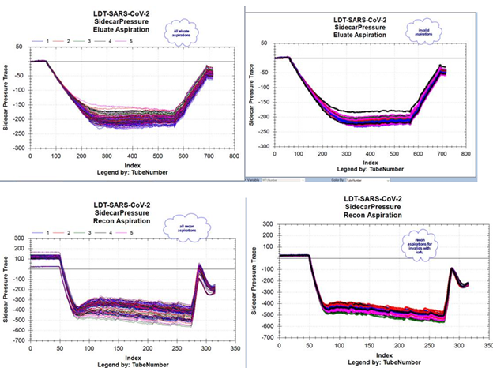
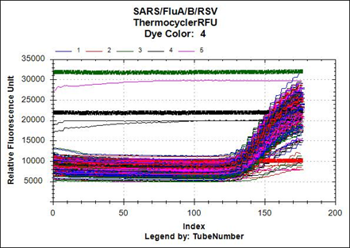
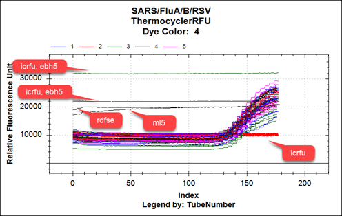

icrfu / icneg
Complaint Description
Panther Fusion
Internal Control (IC) is negative. Poor or no amplification.
icrfu and icneg are results processing flags, i.e., lowercase flags versus assay processing flags, which are uppercase and suggest a hardware failure.
These are new processing flags, only for open access in sw 7.1, and for open access and IVD in sw 7.2.
Results report legend displays:
icrfu – IC is negative.
icneg – IC is negative.
Additional information to distinguish between these two similar flags:
icrfu IC is negative. No amplification in any channel, with no Ct calculated for IC.
icneg IC is negative. IC amplifies, but does not meet maximum Ct cut off (i.e., Ct too late).
Both flags may be seen in a run report where an issue affects an entire run or entire PPR pack, with some samples having icrfu and other samples having icneg. It depends on the raw data for that particular sample.
The flag occurs when there is little or no amplification of the Internal control for a Fusion RT-PCR assay. The sample having this flag is invalid. For a sample to be called Negative (i.e. no amplification in analyte channel), the IC acceptance criteria must be meet. If not, then the sample is invalidated with one of these flags. If the sample has amplification and is deemed positive by sw algorithm, then the IC criteria is not required.
Additional Note: Unlike the Aptima TMA and RT-TMA assays where IC is added to TCR by operator, for Fusion and open access assays, the IC is added to the Fusion Capture Reagent (FCR) by the Panther-side sample pipettor when the FCR/FER/IC bottles are initially loaded, and thereafter becomes wFCR. This avoids the possibility of operator error in not adding the IC.
Table of Contents
-
Field Service
Technical Support
Review the run report.
-
Is the icrfu or icneg flag on one isolated sample or on several samples?
If only one sample in a run has the flag, then it can be an isolated case where there is something inhibitory in the sample. What is the sample type? Is this a validated sample type?
-
If there are many affected samples in the run, is there something in common with the samples having the icrfu or icneg flag, such as isolated to the same PCR cartridge, or to the same PPR tube (in the case of SARS PCR or open access LDTs).
If isolated to a certain PPR tube, was there a handling error or preparation error? Have customer prepare/load a new vial of PPR and monitor.

If isolated to a certain PCR cartridge, was there a storage, shipping, or handling issue? Get the LN from customer.
Are there any additional flags associated with the sample, besides the icrfu or icneg? These results processing flags will often occur as a downstream result of another uppercase flag, which has previously affected the assay processing of the sample.
Below are some other flags seen with icrfu. The flags below are assay processing flags, and are related to various hardware issues. In these cases, one should address the hardware failure.
04/05/2022 19:43:07 680-01 003920951247 Invalid Invalid e, icrfu, LDT, p, RBEEB
04/05/2022 21:33:07 798-01 003600950355 Invalid Invalid e, icrfu, LDT, ML2, p
04/05/2022 21:33:07 798-02 003600950553 Invalid Invalid e, icrfu, LDT, MOS, p
01/17/2022 11:25:29 731-01 GLM-0000681148 Invalid Invalid e, icrfu, LDT,M, p, THW
02/01/2022 11:35:11 306-02 GLM-0000711826 Invalid Invalid ebl3, icrfu, LDT, p, PPFR, RDFL
These are other flags seen with icrfu. These errors occurred at the pipetting of the sample, and may be sample related:
04/06/2022 00:24:43 193-04 001290952123 Invalid Invalid CLT, e, icrfu, LDT, p
02/25/2022 12:52:49 912-01 R220213374 Invalid Invalid e, icrfu, LDT, p, VVFS, x
Are the icrfu/icneg flags across several Fusion assays? Then perhaps the issue is hardware-related, such as an issue with the thermocycler. In this case, review the raw data files (RFU).
Here are some examples where thermocycler well background rfu is too high. “ebh3 flags” occurred simultaneously with the icneg flags.
06/22/2022 04:46:46 475-15 SARS-CoV-2 Positive Control Invalid Invalid ebh3, icneg, LDT, p
06/22/2022 04:46:53 468-02 1083076075 Invalid Invalid ebh3, icneg, LDT, p, x
Field Service
TSE Review
Pending.
TSE Review Example

The higher level sense, fluid is higher: do not know why, but it is higher.
Reagent prep questions...
Aspiration curves: there are some minor differences, with or without oil.

Graph below indicates icrfu flag due to no amplification.

In graph below, notice icrfu vs. icrfu, ebh5 RFU lines.

 button at the top of the page to send feedback, comments, or change requests.
button at the top of the page to send feedback, comments, or change requests.